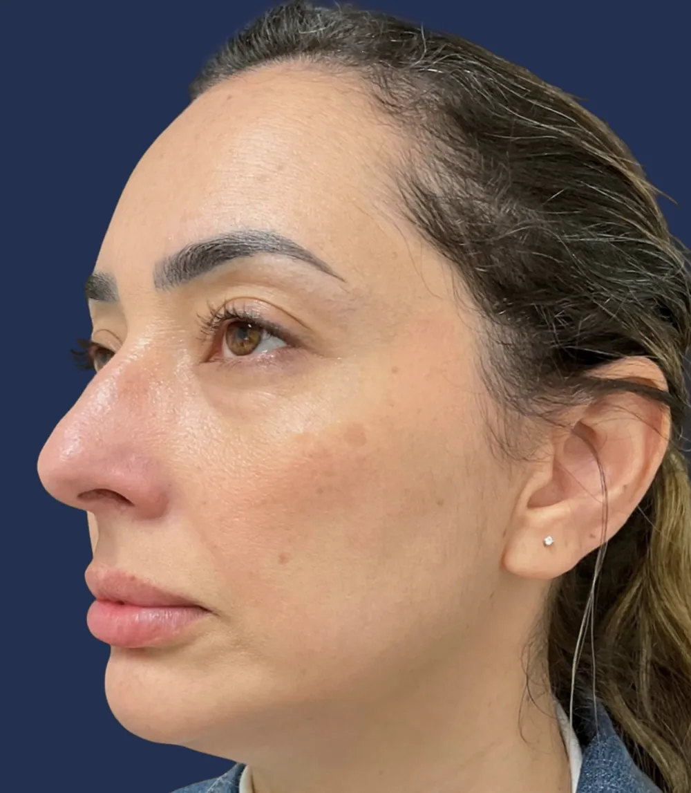
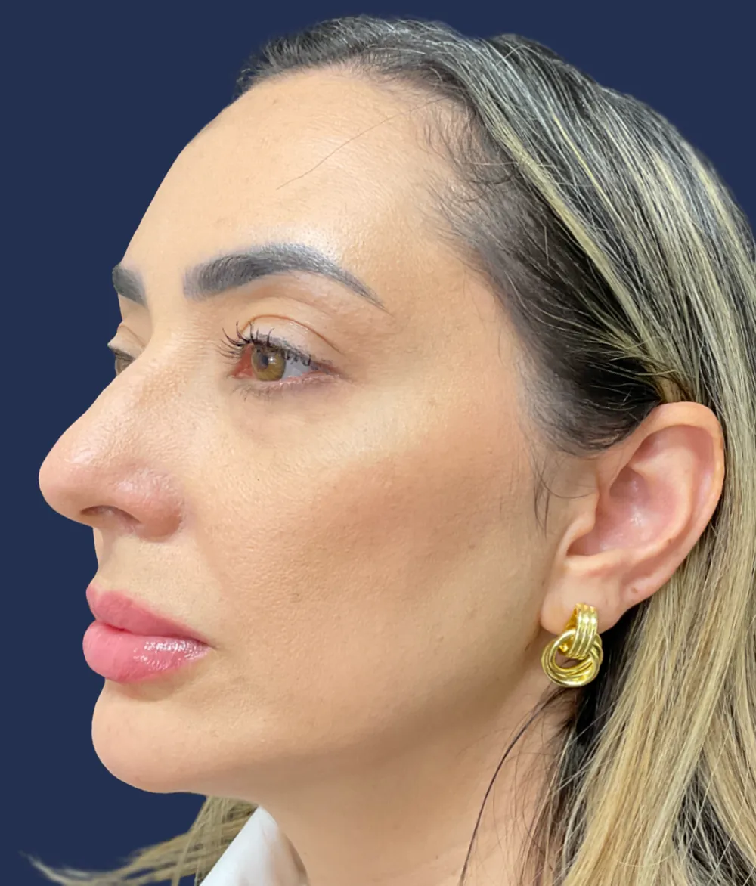
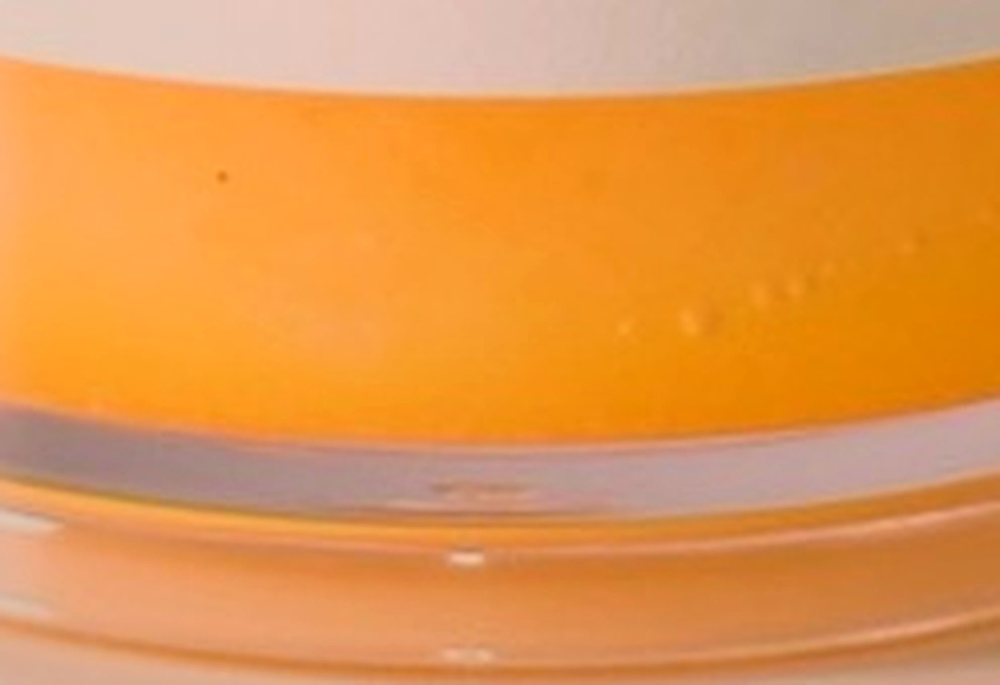
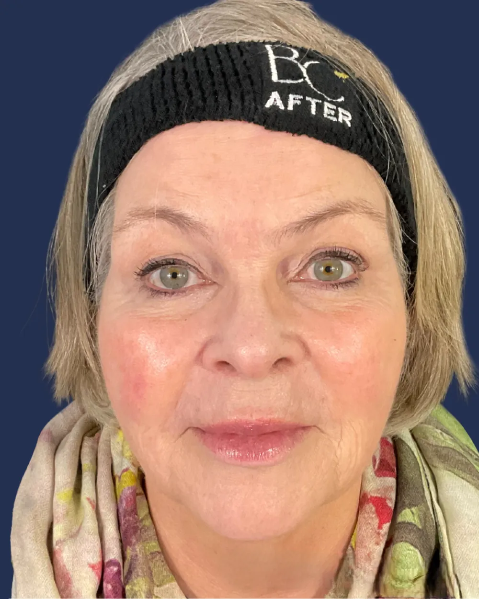

Lipoderma® by Britecyte
The fat worth keeping.
For decades, fat has been something we've been encouraged to lose, reduce, or eliminate. But fat also plays an important structural role in the face — contributing to the natural contours, softness, and volume.
As we age, losing facial fat changes more than our appearance. It changes how we feel when we look in the mirror.

Fat is not filler.
It's structure.
Fat sits in a continuous layer beneath the skin. In the face it gives shape to a cheek, a temple, the transition from brow to eye. It is the reason a face casts the shadow it does in three-quarter light.
When that layer thins, the face doesn't simply lose volume. It loses the transitions that make it recognizable as itself — hollows under the eyes, a softened jawline, a tiredness that has nothing to do with sleep.
That is the fat worth keeping.


The contour, not the cut.
How Lipoderma is placed
Fat doesn't leave evenly.
It leaves in one place.
A cheek, a temple, the under-eye. The layer thins locally while the skin above it stays intact — which is why the shadow changes before the surface does.
Placed, not cut.
A single entry point. Lipoderma is guided through the soft plane beneath the skin and feathered across the hollow — the way any soft-tissue filler is placed. No incision at the treatment site.
Native tissue, laid
back into the gap.
What arrives is whole adipose — cells and the matrix that holds them together. Not dissolved into a gel, not spread thin. The tissue that comes back is the tissue the layer is already made of.
The layer reads
continuous again.
Thickness returns to the hollow. Because the tissue is like-for-like, the transition between treated and untreated is a gradient, not an edge — softness rather than a visible line.

Lipoderma.
Donated human adipose tissue, processed to keep its native structure and prepared for minimally invasive delivery.
Placed by licensed physicians into the face, neck, and hands to restore lost support and volume. Supplied as a stored allograft, so the procedure doesn't depend on harvesting fat from somewhere else on the patient's body.
-
Material
Like-for-like
Adipose tissue restoring adipose tissue. Not a gel, not a spacer, not a volume that sits outside the architecture.
-
Sourcing
Ready when it's needed
An off-the-shelf allograft means no donor-site harvest and no graft attrition between harvest and placement.
-
Processing
Native architecture preserved
Processing preserves intact adipocytes and the extracellular matrix that holds them in place.
-
Placement
Placed by physicians only
Delivered through standard cannulas or needles, and available only through a select network of licensed providers.
Individual results vary. Lipoderma is available only through licensed physicians. Talk with your provider about whether it's appropriate for you.
One product.
Three conversations.
The same tissue means something different depending on where you're standing.
You don't want a different face.
You want yours back.
Weight loss, age, and time change the fat layer before they change anything else. If the person in the mirror looks tired, or older, or simply less like you — that gap is usually structural, not superficial.
- Facial hollowing after weight loss, including GLP-1–assisted loss
- Under-eyes, temples, and midface
- Hands that read older than the face
An alternative to harvesting.
For appropriate smaller-volume applications — primarily facial rejuvenation, neck, and hands — Lipoderma offers an off-the-shelf adipose allograft. No donor site, no harvest morbidity, no attrition between harvest and placement.
- Native adipose architecture preserved through processing
- Delivery through standard cannulas or needles
- Clinical evidence, IFU, and handling guidance in the provider portal
A new category next to fillers and collagen.
Lipoderma isn't positioned against what you already offer. It adds an adipose tissue option for patients who want structural restoration rather than added volume — and a conversation your team can lead.
- Differentiated from filler and collagen-stimulating treatments
- Targeted facial rejuvenation, neck, and hands
- Patient education materials built for the consult room
A result should read
as itself.
The best aesthetic outcome doesn't announce the treatment. It closes the gap between how someone looks and how they feel — and then stops there.

Before AfterDrag to compare · Individual results vary · Photography courtesy of the treating physician
"I didn't want to look like I'd had something done. I wanted the mirror to catch up with how I actually felt."
Patient — Midface restoration
View the outcomes gallery
A select network,
by design.
Lipoderma is placed only by licensed physicians trained on the product. Search by name, city, state, or ZIP to find one near you.
Questions,
welcome.
If something here isn't answered, the best next conversation is with a provider.
A human adipose allograft — donated fat tissue that has been screened, processed to preserve its native structure, and prepared for placement with a cannula or needle. It restores lost support and volume in the face, neck, and hands.
Fillers are engineered materials that add volume. Lipoderma is adipose tissue — what the face is built from in the first place. The distinction matters because the goal is restoring the layer, not occupying space inside it. Ask your provider which approach fits your face and your goals.
No. Lipoderma is donated human adipose tissue from carefully screened donors, processed in an FDA-registered tissue establishment in accordance with applicable regulations for human tissue products. It is not harvested from your body.
Rapid weight loss can reduce the fat that supports the face, contributing to hollowing, sagging, and changes in contour. That's a structural change, and it's the kind Lipoderma is designed to address. Whether it's right for you is a conversation for your provider.
Lipoderma is made from screened donor tissue and processed in an FDA-registered tissue establishment. As with any aesthetic procedure, your provider will discuss potential risks and determine whether Lipoderma is appropriate for you.
Lipoderma is an elective aesthetic product and is self-pay. Pricing is set by your provider based on your individual treatment plan.
Use the provider finder above to search by name, city, state, or ZIP. Every listed practice is licensed and trained on Lipoderma.
Some things are worth holding on to.
The way you see yourself is one.
Start with a provider who can tell you whether Lipoderma is right for your face — and what it would actually take.
Lipoderma® · By Britecyte · Frederick, MD